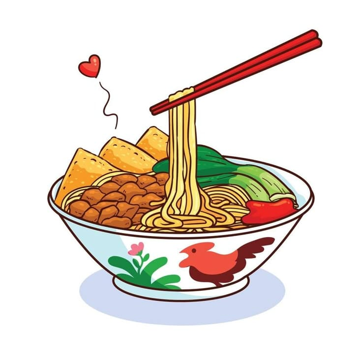

Status Hari Ini
BUKA
Warung Makan Hanisa sedang melayani pelanggan.
Nikmati Makanan dan Minuman Favorit Anda
Warung Makan Hanisa menyediakan berbagai pilihan makanan dan minuman lezat untuk pelanggan.

BUKA
Warung Makan Hanisa sedang melayani pelanggan.
17:00 - 22:00
Status operasional dapat berubah apabila terdapat kendala atau keadaan tertentu.
Kami menyajikan hidangan rumahan berkualitas untuk masyarakat Tarakan.
"Mie ayamnya sangat enak dan porsinya pas!" - Pelanggan Setia
Alamat: Jl. Kusuma Bangsa, Tarakan